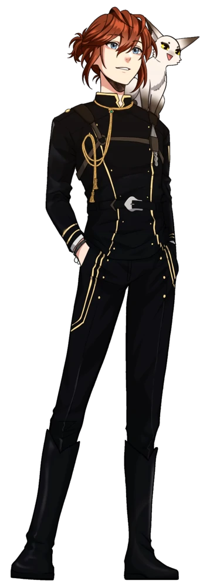
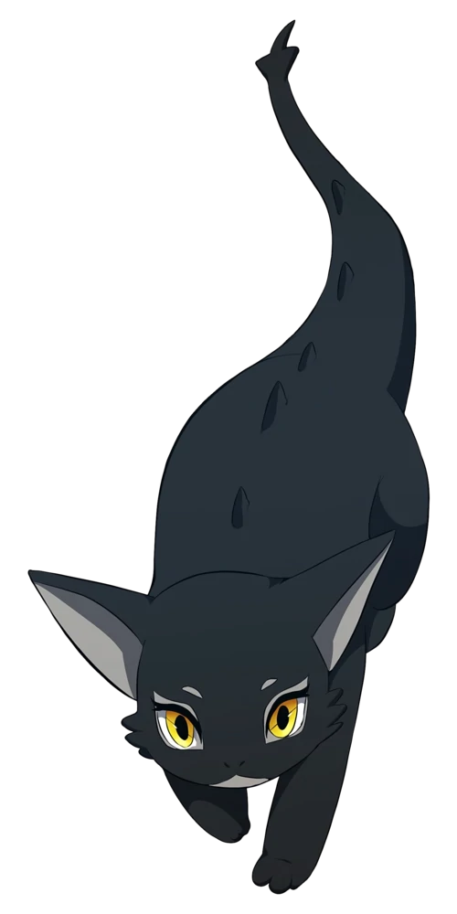
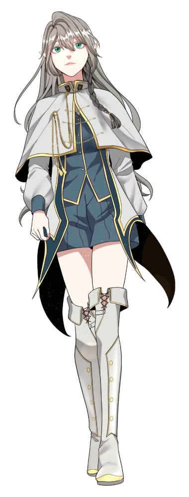

Characters |
|
|---|---|
Arthur Leywin (main chatacter)Arthur Leywin is the main protagonist of The Beginning After The End. In his previous life, he was a king named Grey before he was reincarnated into a new world, on the continent of Dicathen. In his former world, he lived as a king who stood on the top of his country in terms of combat, until he was presumably assassinated through poison one day. However, after living four years as Arthur Leywin, he reawoke as King Grey, as if he wasn't poisoned. After being reincarnated into the Leywin Family, Grey decided that, unlike his previous life, he would live his life to the fullest. To be loved, and surrounded by the friends and family he was void of in his past life. |
 |
SylvieSylvie is the daughter of Sylvia Indrath and Agrona Vritra and the granddaughter of Kezess Indrath and Myre. She is also the bond of Arthur Leywin. She was entrusted to Arthur by her mother. Sylvie’s newborn form looks like a small black kitten but with scales. The sclera that is usually white in the human’s eyes is black. Her pupils are sharp slits that would typically make it look menacing, but with the body of something akin to a small feline animal, she looks adorable. The most noticeable difference between Sylvia and Sylvie is that Sylvie has two horns on its head. It curves outward around her head and then, sharpening into a point in the front. Her head is shaped like a cat’s, but the snout is just a little bit more pointed, otherwise the same. Sylvie’s tail looks exactly like Sylvia’s tail. It’s a reptilian tail that has two red spikes at the end. Along the spine, there are small red spikes that match the color of Sylvie’s eyes. She doesn’t have wings, but where the wings would be located are two small bumps in its stead. Her belly does not have scales, but it looks leathery. |
 |
Tessia EralithTessia Eralith is the sole daughter of Alduin Eralith and Merial Eralith, former king and queen of the elven kingdom of Elenoir. She is the only heiress to the throne and is also the childhood friend of Arthur Leywin. As a child, Tessia had long, gunmetal gray hair that extends just past her shoulders which shines silver under the sunlight. She has a pair of round, gleaming teal eyes set in a small pale face. She had a small perky nose and her facial features are what Arthur describes as "carefully molded gems that looked surreal, almost phantasmal work of art." As an elf from the elven kingdom of Elenoir, Tessia had distinct pointy ears, the elven trademark. She had two braids tied together on the back of her head and along with two braids that hung from behind her ears. She opts to wear white-washed skirts or dresses along with slip-on sandals as casual wear. During outings, Tessia is seen wearing floral dresses paired with a small sun hat along with outerwear sandals. As she grew older, Tessia's hairstyle remained the same but her face grew slimmer and her eyes became narrower. Her ears are pierced and she wears a pair of gold studs. She became much more feminine and is described as a beauty by others. |
 |